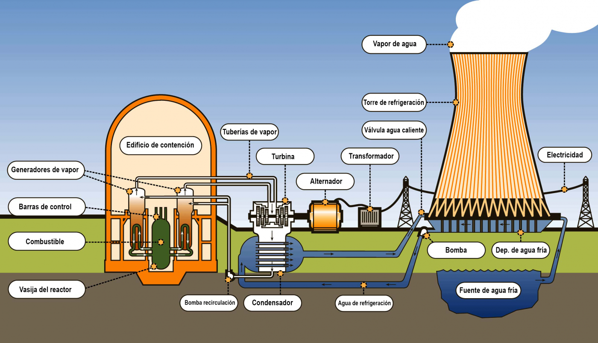
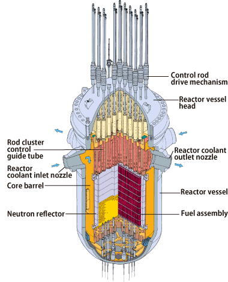
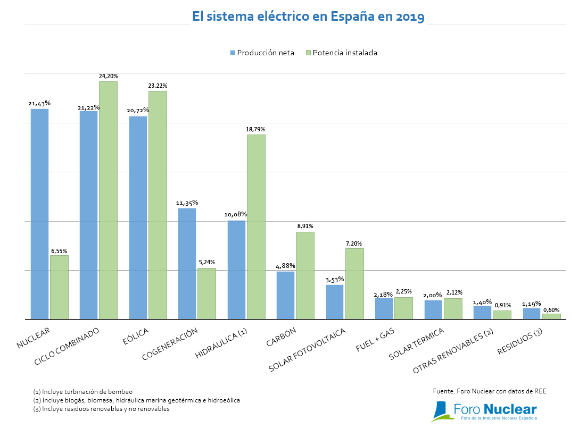

Una central térmica nuclear o planta nuclear es una instalación industrial empleada para la generación de energía eléctrica a partir de energía nuclear. Se caracteriza por el empleo de combustible nuclear fisionable que mediante reacciones nucleares proporciona calor que a su vez es empleado, a través de un ciclo termodinámico convencional, para producir el movimiento de alternadores que transforman el trabajo mecánico en energía eléctrica. Estas centrales constan de uno o más reactores.
Las centrales nucleares se divide, a su vez, en 3 zonas diferentes:
Zona del Reactor: donde se encuentra el elemento principal de toda central nuclear, su reactor de fisión nuclear.
Zona de producción eléctrica: donde encontramos turbinas de vapor y generadores.
Zona de condensación: donde se condensa el vapor generado en el reactor.

En la imagen podemos ver, de forma esquemática, como funciona una central nuclear con un reactor nuclear por presión de agua (reactor de tipo PWR). A la izquiera encontramos el reactor, donde se produce la fisión nuclear y, por tanto, se generan enormes cantidades de calor. Gracias a las altas temperaturas, se genera el vapor que moverá la turbina, iniciando el proceso de producción eléctrica. A su vez, se utiliza un sistema externo de refrigeración por agua, cuyo elemento más reconocible es la gran torre de refrigeración, cuya única emisión es el vapor de agua.
El Reactor Nuclear
El núcleo de un reactor nuclear consta de un contenedor o vasija en cuyo interior se albergan bloques de un material aislante de la radiactividad, comúnmente se trata de grafito o de hormigón relleno de combustible nuclear formado por material fisible (uranio-235 o plutonio-239). En el proceso se establece una reacción sostenida y moderada gracias al empleo de elementos auxiliares que absorben el exceso de neutrones liberados manteniendo bajo control la reacción en cadena del material radiactivo; a estos otros elementos se les denominan moderadores.
Rodeando al núcleo de un reactor nuclear está el reflector cuya función consiste en devolver al núcleo parte de los neutrones que se fugan de la reacción.
Las barras de control que se sumergen facultativamente en el reactor, sirven para moderar o acelerar el factor de multiplicación del proceso de reacción en cadena del circuito nuclear.
El blindaje especial que rodea al reactor, absorbe la radiactividad emitida en forma de neutrones, radiación gamma, partículas alfa y partículas beta.

Producción Eléctrica
El reactor nuclear es el encargado de realizar la fisión de los átomos del combustible nuclear, como uranio, generando como residuo el plutonio, liberando una gran cantidad de energía calorífica por unidad de masa de combustible.
El generador de vapor es un intercambiador de calor que transmite calor del circuito primario, por el que circula el agua que se calienta en el reactor, al circuito secundario, transformando el agua en vapor de agua que posteriormente se expande en las turbinas de vapor, produciendo el movimiento de éstas que a la vez hacen girar los generadores eléctricos, produciendo la energía eléctrica. Mediante un transformador se aumenta la tensión eléctrica a la de la red de transporte de energía eléctrica.
En España, a pesar de tener solo 7 reactores operativos, todos de tipo PWR y BWR, se generan más de 7.390 MW de potencia, lo que equivale a un 21% de la producción neta a nivel nacional, lo que lo convierte, probablemente, en la fuente de energía sin emisiones de gases de efecto invernadero más eficiente a nivel nacional, y con menor impacto sobre el medio ambiente.

Zona de Condensación
El sistema de refrigeración se encarga de que se enfríe el reactor. Funciona de la siguiente manera: mediante un chorro de agua de 44 600 mg/s aportado por un tercer circuito semicerrado, llamado sistema de circulación, se realiza la refrigeración del núcleo externo. Este sistema consta de dos tubos de refrigeración de tiro artificial, un canal de recogida de tierra y las correspondientes bombas para la refrigeración del núcleo externo y elevación del agua a las torres.
Debido a que este sistema supone una demanda de agua, lo común es que las centrales nucleares se ubican cerca de rios, embalses, o del propio océano. Gracias a su sistema de refrigeración, separado de la zona del reactor y dividido en dos etapas (etapa primaria y secundaria, siendo la primaria la que ocurre dentro del reactor y la secundaria la que ocurre fuera, por separado), así como a no retornar agua en ningún momento a la fuente de agua, el impacto ambiental del ciclo térmico de la central es nulo.